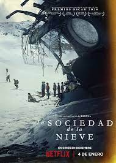
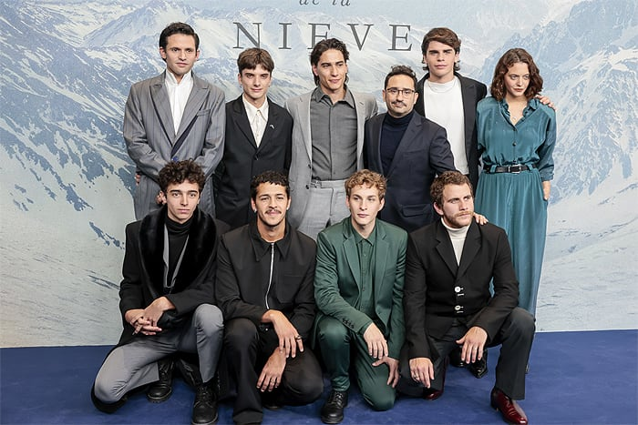

INTRODUCCIÓN
| Esta página web esta dedicada a la pelicula "LA SOCIEDAD DE LA NIEVE", haciendo un breve enfasis en lo que esta increible pelicula quere llegar a transmitir, si lo vemos desde una perspectiva reflexiva, puede llegar a darnos gratas lecciones de vida... |
FARID DIECK
| Farid Dieck es un escritor, creativo y conferencista originario de Monterrey, NuevoLeón. Es cofundador de la agencia creativa Porciento dedicada a la creación de contenidos digitales. A Farid le apasiona la filosofía, la psicología y el arte en diversas expresiones como lo son la música y la poesía. Como reflejo de esto, su primera carrera fue una Ingeniería en Producción Musical por el Tec de Monterrey y actualmente se encuentra estudiando una Licenciatura en Psicología por la UNAM, así como una maestría en salud mental: Clínica psicoanalítica por la Universidad de León de España. Farid también ha estudiado filosofía moral y ciencias de la felicidad mediante diplomados impartidos por las universidades de Yale y Berkeley, respectivamente. Hoy, Farid cuenta con más de 4 millones de seguidores en sus diferentes redes sociales y ha logrado presentarse como conferencista en más de 10 países en América y Europa transmitiendo su mensaje a personas de todas las edades. |
SINOPSIS
|  | "La Sociedad de la Nieve" es una película dramática española de 2023, dirigida y escrita por J.A. Bayona. Se basa en el libro homónimo de Pablo Vierci, que a su vez se inspira en el documental de Gonzalo Arijón sobre el accidente del vuelo 571 de la Fuerza Aérea Uruguaya en la cordillera de los Andes en 1972. La película se centra en Numa Turcatti, uno de los pasajeros del vuelo, interpretado por Enzo Vogrincic. Fue estrenada en salas de cine de Uruguay el 13 de diciembre de 2023, seguido de España dos días después, y se lanzó mundialmente en Netflix el 4 de enero de 2024. La película ha sido reconocida por la Academia de las Artes y las Ciencias Cinematográficas para representar a España en los Premios Óscar 2024 en la categoría de Mejor Película Internacional, y es considerada una de las más galardonadas en la historia de los Premios Goya. La trama sigue la desgarradora historia del accidente aéreo en los Andes, donde los supervivientes, principalmente jugadores del equipo de rugby del Old Christians Club de Montevideo, se ven forzados a depender unos de otros para sobrevivir en el remoto corazón de la cordillera 4. La producción de la película implicó una meticulosa investigación, con más de 100 horas de entrevistas a los supervivientes, y utilizó los nombres reales de todos los pasajeros fallecidos. El rodaje se llevó a cabo en diversas ubicaciones, incluyendo la Sierra Nevada en España, Montevideo en Uruguay, y regiones de Chile y Argentina en los Andes, incluyendo el lugar real del accidente. La película ha recibido críticas positivas, destacando su sentido de dignidad, heroísmo sin estridencias, y la evidencia de la bondad. Se ha elogiado por su técnica, narrativa, y profundidad, así como por su respeto hacia los muertos y la historia. Además, ha sido nominada como Mejor Película de habla no inglesa en los premios BAFTA |
REPARTO
| El reparto de "La Sociedad de la Nieve" incluye a un grupo de jóvenes actores de nacionalidad argentina y uruguaya, quienes interpretan a los sobrevivientes del accidente del vuelo 571 en los Andes. Aunque los detalles específicos del reparto no se mencionan en las fuentes proporcionadas, la película es notable por su enfoque en la fidelidad a los hechos reales y por la inclusión de sobrevivientes reales del accidente, lo que le da un toque de autenticidad y realismo . La película, dirigida por J.A. Bayona, es conocida por su meticulosidad y respeto hacia la historia real, utilizando nombres reales de los pasajeros y sobrevivientes, y permitiendo a los actores conocer a las personas a las que interpretaban o a sus familiares . Esto contribuye a la profundidad emocional y al impacto de la película, que ha sido elogiada por su representación de la dignidad, el heroísmo y la bondad de los sobrevivientes . Aunque las fuentes no proporcionan una lista detallada de los actores, la película ha sido reconocida por su calidad y por su representación fiel de los eventos reales, lo que la ha convertido en una de las versiones más fieles a la realidad del accidente del vuelo 571 en los Andes. |  |
VIDEO NARRADO Y ANALIZADO
| "La Sociedad de la Nieve" es una película que ha generado diversas reflexiones y críticas por su enfoque
en la supervivencia y la humanidad en situaciones extremas. A continuación, se presentan algunas reflexiones
basadas en las críticas y análisis disponibles:
En resumen, "La Sociedad de la Nieve" ofrece una reflexión profunda sobre la supervivencia, la humanidad y la cooperación en situaciones extremas. A través de su enfoque en el grupo y su exploración sensorial, la película invita a los espectadores a reflexionar sobre la naturaleza de la existencia y la posibilidad de un sentido más profundo en medio de la adversidad. |
REFLEXIONES
- Uno a uno empiezan a superar sus escrúpulos morales y se unen en el acto de supervivencia.
- El proceso de cómo emergen nuevas normas sociales dentro de un grupo o sociedad las normas sociales son reglas no escritas que emergen de la interacción entre los miembros de un grupo y que guían comportamientos actitudes y percepciones dentro de él estas normas son importantes porque hacen previsibles las acciones de los demás y así disminuyen la ambigüedad y facilitan el funcionamiento cohesivo del grupo cada sociedad crea su propio conjunto de normas basadas en valores y temas que considera relevantes Incluyendo los tabúes sociales que son prácticas vistas como inaceptables o aborrecibles sin embargo estas normas no son fijas cambian según con lo que el grupo considera importante
- Cuando el grupo opta por la pagia para sobrevivir aunque es un tabú cultural la extrema situación les esfuerza reevaluar esta Norma que ya no se ajusta a las necesidades del grupo donde la supervivencia es su máxima prioridad y esto nos demuestra que en tiempos de crisis tanto individuos como grupos pueden superar las limitaciones de sus culturas convencionales y adoptar acciones antes impensables.
- El liderazgo en un grupo puede cambiar drásticamente ante nuevas circunstancias especialmente en situaciones críticas.
- Las jerarquías existentes pueden perder su relevancia ante desafíos completamente nuevos y en estas circunstancias suelen destacarse como líderes aquellos individuos que logran comprender y manejar estas nuevas dinámicas siendo a menudo los más inesperados quienes emergen en estos roles.
- La forma de compartir valores, actitudes y objetivos comunes en la película el grupo inicialmente mostraba cohesión ya que muchos eran amigos y compañeros de rugby pero esta cohesión se intensifica a medida que enfrentan la tragedia juntos y reconocen su interdependencia para sobrevivir y es este objetivo compartido El que sirve como el principal vínculo que los une promoviendo una fuerte identificación colectiva los miembros comienzan a identificarse más con el colectivo que como individuos adoptan una mentalidad de nosotros.
- El desafío psicológico Monumental al contravenir sus creencias y valores fundamentales para aliviar este conflicto interno tenían que justificar de alguna forma sus acciones la supervivencia el amor en su forma más elevada reconoce que amar implica un esfuerzo activo por beneficiar a otros ver su potencial y elevarlos esta realización le brinda la paz para aceptar su destino encontrando consuelo y hasta felicidad en la idea de que su muerte beneficiaría la supervivencia de sus amigos.
- Especialmente los momentos más adversos en un mundo que a veces parece ensalzar en el individualismo no debemos olvidar que es juntos apoyándonos unos a otros como realmente podemos superar las adversidades y Cómo podemos hacer del mundo un lugar mejor para todos la sociedad de la nieve nos Recuerda que nuestro fundamento más íntimo Descansa en la necesidad que tenemos de cuidarnos unos a otros.